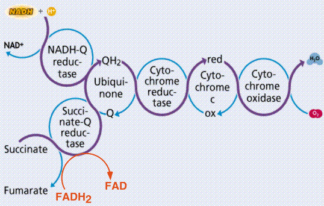

Nine reactions, each catalyzed by a specific enzyme, makeup the process we call glycolysis. ALL organisms have glycolysis occurring in their cytoplasm.
At steps 1 and 3 ATP is converted into ADP, inputting energy into the reaction as well as attaching a phosphate to the glucose. At steps 6 and 9 ADP is converted into the higher energy ATP. At step 5 NAD+ is converted into NADH + H+.
The process works on glucose, a 6-C, until step 4 splits the 6-C into two 3-C compounds. Glyceraldehyde phosphate (GAP, also known as phosphoglyceraldehyde, PGAL) is the more readily used of the two. Dihydroxyacetone phosphate can be converted into GAP by the enzyme Isomerase. The end of the glycolysis process yields two pyruvic acid (3-C) molecules, and a net gain of 2 ATP and two NADH per glucose.
Graphic summary of the glycolysis process. Image from Purves et al., Life: The Science of Biology, 4th Edition, by Sinauer Associates (www.sinauer.com) and WH Freeman (www.whfreeman.com), used with permission.
Under anaerobic conditions, the absence of oxygen, pyruvic acid can be routed by the organism into one of three pathways: lactic acid fermentation, alcohol fermentation, or cellular (anaerobic) respiration. Humans cannot ferment alcohol in their own bodies, we lack the genetic information to do so. These biochemical pathways, with their myriad reactions catalyzed by reaction-specific enzymes all under genetic control, are extremely complex. We will only skim the surface at this time and in this course.
Alcohol fermentation is the formation of alcohol from sugar. Yeast, when under anaerobic conditions, convert glucose to pyruvic acid via the glycolysis pathways, then go one step farther, converting pyruvic acid into ethanol, a C-2 compound.
Fermentation of ethanol. Image from Purves et al., Life: The Science of Biology, 4th Edition, by Sinauer Associates (www.sinauer.com) and WH Freeman (www.whfreeman.com), used with permission.
Many organisms will also ferment pyruvic acid into, other chemicals, such as lactic acid. Humans ferment lactic acid in muscles where oxygen becomes depleted, resulting in localized anaerobic conditions. This lactic acid causes the muscle stiffness couch-potatoes feel after beginning exercise programs. The stiffness goes away after a few days since the cessation of strenuous activity allows aerobic conditions to return to the muscle, and the lactic acid can be converted into ATP via the normal aerobic respiration pathways.
Fermentation of lactate (lactic acid). Image from Purves et al., Life: The Science of Biology, 4th Edition, by Sinauer Associates (www.sinauer.com) and WH Freeman (www.whfreeman.com), used with permission.
When oxygen is present (aerobic conditions), most organisms will undergo two more steps, Kreb's Cycle, and Electron Transport, to produce their ATP. In eukaryotes, these processes occur in the mitochondria, while in prokaryotes they occur in the cytoplasm.
Overview of the cellular respiration processes. Image from Purves et al., Life: The Science of Biology, 4th Edition, by Sinauer Associates (www.sinauer.com) and WH Freeman (www.whfreeman.com), used with permission.
Pyruvic acid is first altered in the transition reaction by removal of a carbon and two oxygens (which form carbon dioxide). When the carbon dioxide is removed, energy is given off, and NAD+ is converted into the higher energy form NADH. Coenzyme A attaches to the remaining 2-C (acetyl) unit, forming acetyl Co-A. This process is a prelude to the Kreb's Cycle.
The Acetyl Co-A (2-C) is attached to a 4-C chemical (oxaloacetic acid). The Co-A is released and returns to await another pyruvic acid. The 2-C and 4-C make another chemical known as Citric acid, a 6-C. Kreb's Cycle is also known as the Citric Acid Cycle. The process after Citric Acid is essentially removing carbon dioxide, getting out energy in the form of ATP, GTP, NADH and FADH2, and lastly regenerating the cycle. Between Isocitric Acid and a-Ketoglutaric Acid, carbon dioxide is given off and NAD+ is converted into NADH. Between a-Ketoglutaric Acid and Succinic Acid the release of carbon dioxide and reduction of NAD+ into NADH happens again, resulting in a 4-C chemical, succinic acid. GTP (Guanine Triphosphate, which transfers its energy to ATP) is also formed here (GTP is formed by attaching a phosphate to GDP).
The remaining energy carrier-generating steps involve the shifting of atomic arrangements within the 4-C molecules. Between Succinic Acid and Fumaric Acid, the molecular shifting releases not enough energy to make ATP or NADH outright, but instead this energy is captured by a new energy carrier, Flavin adenine dinucleotide (FAD). FAD is reduced by the addition of two H's to become FADH2. FADH2 is not as rich an energy carrier as NADH, yielding less ATP than the latter.
The last step, between Malic Acid and Oxaloacetic Acid reforms OA to complete the cycle. Energy is given off and trapped by the reduction of NAD+ to NADH. The carbon dioxide released by cells is generated by the Kreb's Cycle, as are the energy carriers (NADH and FADH2) which play a role in the next step.
Summary of the Krebs' (or citric acid) cycle. Image from Purves et al., Life: The Science of Biology, 4th Edition, by Sinauer Associates (www.sinauer.com) and WH Freeman (www.whfreeman.com), used with permission.
Whereas Kreb's Cycle occurs in the matrix of the mitochondrion, the Electron Transport System (ETS) chemicals are embedded in the membranes known as the cristae. Kreb's cycle completely oxidized the carbons in the pyruvic acids, producing a small amount of ATP, and reducing NAD and FAD into higher energy forms. In the ETS those higher energy forms are cashed in, producing ATP. Cytochromes are molecules that pass the "hot potatoes" (electrons) along the ETS chain. Energy released by the "downhill" passage of electrons is captured as ATP by ADP molecules. The ADP is reduced by the gain of electrons. ATP formed in this way is made by the process of oxidative phosphorylation. The mechanism for the oxidative phosphorylation process is the gradient of H+ ions discovered across the inner mitochondrial membrane. This mechanism is known as chemiosmotic coupling. This involves both chemical and transport processes. Drops in the potential energy of electrons moving down the ETS chain occur at three points. These points turn out to be where ADP + P are converted into ATP. Potential energy is captured by ADP and stored in the pyrophosphate bond. NADH enters the ETS chain at the beginning, yielding 3 ATP per NADH. FADH2 enters at Co-Q, producing only 2 ATP per FADH2.

Electron transport system. Images from Purves et al., Life: The Science of Biology, 4th Edition, by Sinauer Associates (www.sinauer.com) and WH Freeman (www.whfreeman.com), used with permission.
Email: mj.farabee@emcmail.maricopa.edu
Last modified:
The URL of this page is: